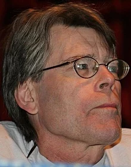

В последней книге цикла Роланд и его членов, преследуемых сыном Алого Короля и самого стрелка Мордредом, выходят на финишную прямую. Сюзанна, разрешившись от бремени, делает попытку убить Мордреда, но ей удаётся только ранить его. Роланд и Эдди в мире, где живёт их создатель Стивен Кинг, оставляют задание для ка-тета Джона Каллема, Аарона Дипно и Мозеса Карвера, крестного отца Одетты Холмс - Сюзанны Дин. Прорываясь в Федик на помощь Сюзанне, Джейк Чамберс, Ыш и отец Каллаген попадают в логово «низких людей» и вампиров. Отец Каллаген гибнет. Погибает также и один из могущественных инструментов Роланда - Рэндалл Флэгг (человек в черном).

Про автора
Сти́вен Э́двин Кинг
21 сентября 1947
Сти́вен Э́двин Кинг - мериканский писатель, работающий в разнообразных жанрах, включая ужасы, триллер, фантастику, фэнтези, мистику, драму, детектив; получил прозвище «Король ужасов». Продано более 350 миллионов экземпляров его книг[5], по которым было снято множество художественных фильмов и сериалов, телевизионных постановок, а также нарисованы комиксы. Кинг опубликовал 60 романов, в том числе семь под псевдонимом Ричард Бахман, и 5 научно-популярных книг.